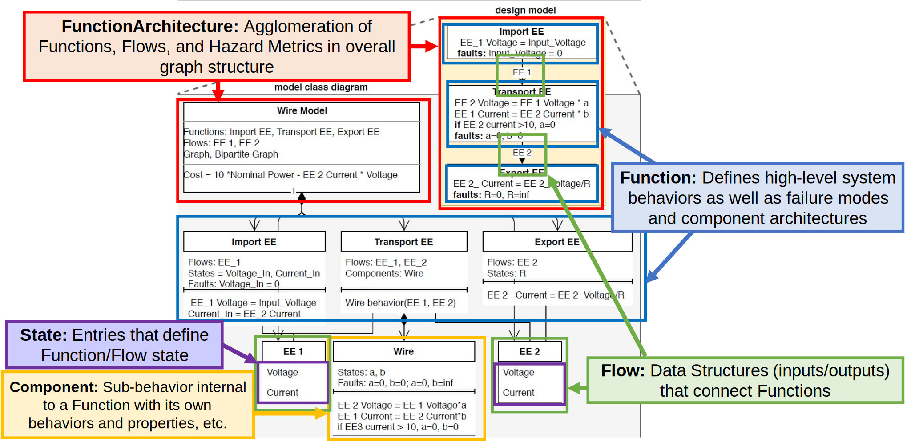

Intro to resilience modeling, simulation, and visualization in Python with fmdtools.
Version: 2.2.1
Overview
Overview of fmdtools
Purpose
Project Structure
Common Classes/Functions
Basic Syntax
Coding Activity
Example model:
examples/pump/ex_pump.pyWorkbook:
examples/pump/Tutorial_unfilled.ipynbModel Instantiation
Simulation
Visualization/Analysis
Prerequisites
Ideally, some pre-existing Python and Git knowledge
Python distribution (anaconda or uv)
Ideally this is already set up!
Download/install from:
https://www.anaconda.com/products/individual
https://github.com/astral-sh/uv
A git interface
Github Desktop (graphical git environment)
git-scm (stand-alone CLI)
Motivation: Modeling System Resilience
Resilience means taking a dynamic understanding of risk and safety

Why is Resilience Important?

Enabling a proactive design process - especially when we don’t have data
Why fmdtools? Possible Competitors:
Uncertainty Quantification tools: (e.g. OpenCossan)
Does not incorporate fault modeling/propagation/visualization aspects
MATLAB/modelica/etc. Fault Simulation tools
Rely on pre-existing model/software stack–Useful, but often difficult to hack/extend (not open-source)
Safety Assessment tools: (e.g. Alyrica, Hip-Hops)
Focused on quantifying safety, not necessarily resilience
As a result, use different model formalisms!
Why fmdtools? Pros:
Highly Expressive, modular model representation.
faults from any component can propagate to any other connected component
highly-extensible code-based behavior representation
modularity enables complex models and modelling use-cases
Research-oriented:
Written in/relies on the Python stack
Open source/free software
Enables design:
Models can be parameterized and optimized!
Plug-and-play analyses and visualizations
Why not fmdtools? Cons:
You already have a pre-existing system model
fmdtools models are built in fmdtools
if you have a simulink/modelica model, you may just want to use built-in tools
You want to use this in production
fmdtools is Class E Software and thus mainly suitable for research (or, at least, we don’t guarantee it)
Somewhat dynamic development history
What is fmdtools? A Python package for design, simulation, and analysis of resilience.

What is fmdtools? Repo Structure
[Repository] (https://github.com/nasa/fmdtools/)
/fmdtools: installable package directory/examples: example models with demonstrative notebooks and tests/docs: HTML Documentation (source files at/docs-source)/tests: stand-alone tests (and testing rigs)Basic information:
README.md,CONTRIBUTORS.md,PUBLICATIONS.md,LICENSE,fmdtools_Individual_CLA.pdf, etc.Config/test files:
requirements.txt,pyproject.toml,conf.py,index.rst, etc.
Activity: Download and Install fmdtools
repo link: https://github.com/nasa/fmdtools/
set up repo:
create
path/to/fmdtoolsfolder for repo(usually in
/documents/GitHub)
clone git into folder:
git clone https://github.com/nasa/fmdtools.gitcan also use webpage
package installation:
anaconda: Open Python from anaconda (e.g., open Spyder) and install with
pip install -e /path/to/fmdtoolsuv: run
uv pip install .from fmdtools repository
Analysis Workflow/Structure

Defining a Model
What do we want out of a model?
What behaviors and how much fidelity do we need?
What functions/components and interactions make up the system?
One function or multiple functions?
Is it a controlled system? Are there multiple agents?
What type of simulation do we want to run?
Single-timestep vs multi-timestep vs network
What scenarios do we want to study and how?
Failure modes and faulty behaviors
Disturbances and changes in parameters
What are the possible effects of hazards and how bad are they?
By what metrics?
Defining a Model

Concept: Static Propagation

In a single timestep, functions with static_behavior() methods simulate until behaviors converge (i.e., no new state values)
Concept: Propagation over Time
Model increments (simulated + history updated) over each time-step until a defined final time-step or specified indicator returns true.
Functions with
dynamic_behavior()run once in defined order

Python Concept: Classes and Object-Oriented Programming
Classes are the core of object-oriented programming. A class in python might look like:
class Hello(object):
a = 3 # <- Class variables define data used by all objects
def __init__(self, x=1, y=2): #<- This is a "dunder" method to instantiate the class
self.x = x
self.y = y
def sum(self):
return self.x + self.y + self.a
Classes are instantiated to form objects, which we can then use to manipulate data, e.g.:
>>> hi = Hello(x=2, y=2)
>>> hi.sum()
7
Why classes and objects?
Classes give you the ability to group data and methods together to satisfy an overall use-case
Classes define the “template”–what should an object include, be able to do, how should it be instantiated, etc.
Inheritance–you can create subclasses that creating new variants for a given system with specific properties (e.g., Ferrari might be a subclass of a Car class)
Principle of encapsulation: Object-oriented programming give you control of what the user (or environment sees) versus what should be “internal”
Organization: You always know what methods are supposed to act on what data
Independence: New objects are independent of old objects, so, e.g., if you want a new sim while keeping the old one you can do that
Python dataclasses (and similar)
fmdtools uses the recordclass package to define dataclasses: https://github.com/intellimath/recordclass
from recordclass import dataobject
class Point(dataobject):
x: int = 1 # <- Field for variable x
y: int = 2 # <- Field for variable y
Dataclasses let you define the data as fields and then lets you directly instantiate the class based on the data, e.g.:
>>> p = Point(2, 3)
>>> p.x
2
Dataclasses are used in fmdtools for Containers
Containers - The building blocks of simulations

Containers are used to define various attributes of Functions and Flows
Class aggregation in fmdtools BaseObject
In fmdtools, BaseObject classes (Functions, Flows, etc.) aggregate Containers classes, allowing you to instantiate multiple at the same time, e.g., in the class:
class ExampleObject(BaseObject):
container_s = StateName
container_sattaches theStateNameclass to the ExampleObject class as a containerOur object class instantiates it to the variable
s, e.g.:
>>> ex = ExampleObject()
>>> ex.s.varname1
1.0
Main classes in fmdtools

Containers are used to represent properties of Objects (all classes below)
Blocks are the main behaviors of the system (e.g., Functions or Components)
Flows connect functions (and are thus a part of their definition)
Architectures are used to instantiate and connect Blocks with Flows
Flow Code Template

Flows represent connections or shared variables between different functions. Think of them as Function inputs/outputs.
Flows are build from container classes like states, along with their own methods/variables.
Function Code Template
Function Architecture Code Template

Demo Model Activity: examples/pump/ex_pump.py
Notice the definitions and structure:
States:
WaterStates,EEStates,SignalStatesFlows:
Water,EE,SignalFunctions:
ImportEE,ImportWater,ExportWater,MoveWater,ImportSignalModes (e.g.,
ImportEEMode,ImportSigMode)Mode probability model
Actual modes in
fm_argsentry
others attributes, e.g.,
Timer
Model:
Pumpconnects functions, flows, and definesend_classificationParameter:
PumpParamdefines values we can change in the simulation
Why do we structure models this way?
Enabling undirected propagation: Behavior from any Block in an Architecture can propagate to anything else, which is important for capturing the full set of hazardous behavior
Composability and Parameterization: OOP gives us the ability to create a number of co-existing model variants by varying parameters as well as creating sub-classes with different containers
Avoiding one big monolithic class: We can document and unit test individual simulation pieces a lot easier than one giant class, increasing code quality
More Resources for Model Definition
Note the docs for model definition are in https://nasa.github.io/fmdtools/docs-source/fmdtools.define.html
Other examples also can be helpful: https://nasa.github.io/fmdtools/examples/Examples.html
Notebook Activity:
Open /examples/pump/Tutorial_unfilled.ipynb:
Instantiate the model
mdl = Pump()
Explore structure
Try different parameters!
Change things! What does the model directory look like?
dir(mdl)
simulate to given time with
mdl(time)
Simulation Concepts: Types of Simulations

For more info on syntax/arguments, see documentation for fmdtools.sim.propagate.
Simulation Concepts: Sampling Approaches
These classes define multi-run simulations which can be used to quantify uncertain performance/resiliences:
SampleApproach/FaultSample: Which faults to sample and when
Relies on mode information encoded in the model
Simulated using
propagate.fault_sample()
ParameterSample: Nominal parameters or random seeds to sample
Can be simulated in
propagate.parameter_sample()Can be simulated in conjunction with faults using
propagate.nested_sample
See docs for: fmdtools.sim.fault_sample
Simulation Concepts: Things to Consider
Static/Dynamic propagation: How function states propagate to each other in a single time-step and multiple time-steps?
Stochastic Propagation: Whether and how stochastic states are instantiated over time
e.g. do we run with the “default” values of parameters, or do we sample from a random number generator?
Breadth of Scenarios: How hazards are represented as discrete scenarios to simulate
What set of joint faults do we use? How many times are sampled?
Operational scenarios and joint operational/fault scenarios
Activity: Simulate the Model
Run fault propagation methods:
propagate.nominal(),propagate.one_fault(),propagate.fault_sample()
What do the results look like? Explore data structures:
analyze.result.Result,analyze.result.History
Explore:
What happens when you change
FaultSampleparameters?What happens when you change
Modelparameters?How do these methods compare in terms of computational time?
Analysis Modules - see docs for fmdtools.analyze

Analysis Activity
Visualize the results:
Show model graph
Show nominal performances
Show performances in a nominal scenario
Make a scenario-based FMEA
Explore:
How can you show only the parameters you want? Or change the formatting?
What does the behavior under other faults look like?
What other analyses can you perform with these results?
Starting your own repo/project
1.) Use uv init to create a template project, with its own virtual environment at .venv, README.md, and pyproject.toml files.
Fill in these files (e.g., fmdtools version, contributors, project description)
see: https://docs.astral.sh/uv/guides/projects/
2.) Install fmdtools into the venv:
uv pip install fmdtoolsoruv pip install fmdtools @ "./path/to/fmdtools"
3.) Set up the rest of the python tooling: https://github.com/nasa/fmdtools?tab=readme-ov-file#set-up-python-tooling-environment
5.) See if it all works! Get a script to run fmdtools from the venv kernel in your IDE.
6.) Commit and sync to remote
Conclusions/Summary
fmdtools is an environment for designing resilient systems
/defineenables model definition/simis used to define simulations/analyzeis used to analyze and visualize simulation results
I hope you agree that it has some powerful features!
Modeling expressiveness and clarity
Types of simulations that can be run
Powerful but easy-to-leverage plug-and-play analyses
Further Reading/Links
More advanced topics (see examples), including Search and optimization, Human, Systems-of-Systems modeling, and Modeling Stochastic Behavior
Model Development Guide: Has best practices for developing models in a strategic way (especially helpful for complex models)
Overview Paper: